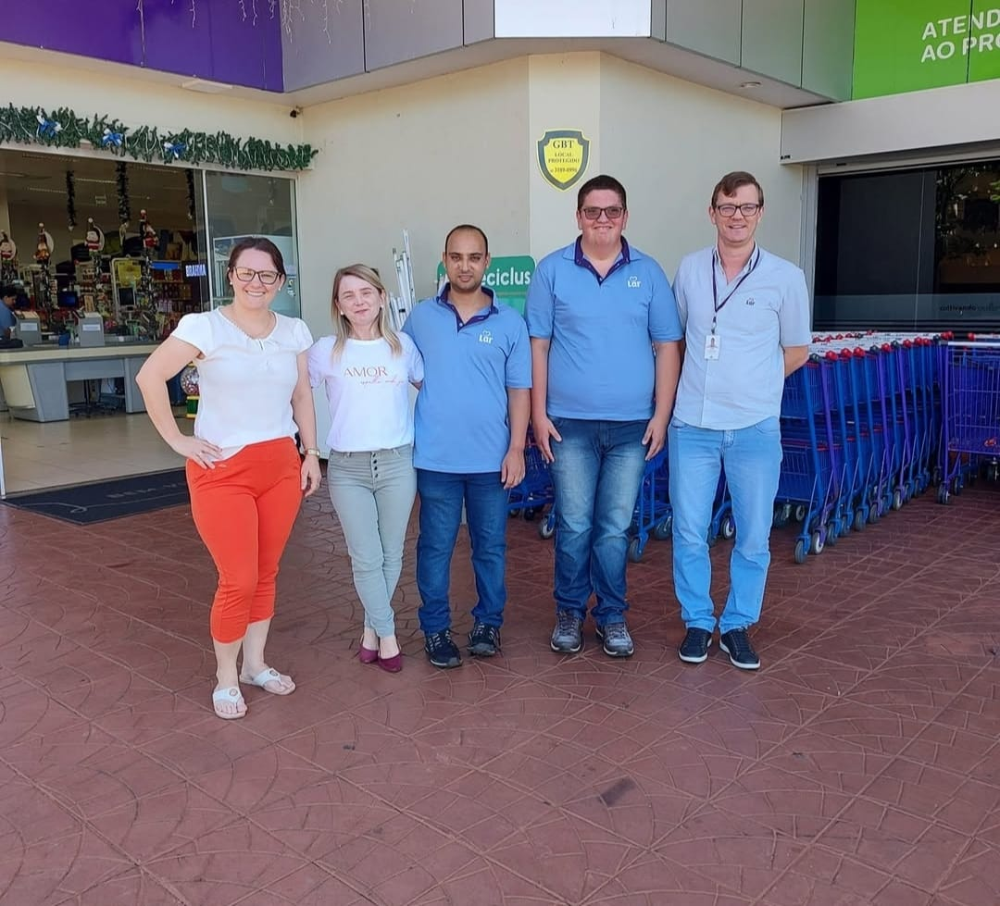
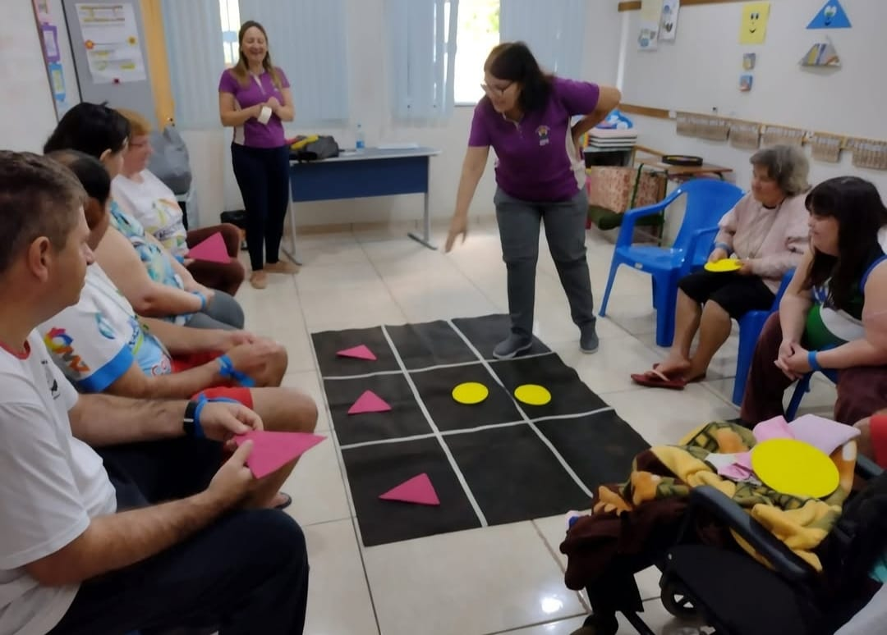
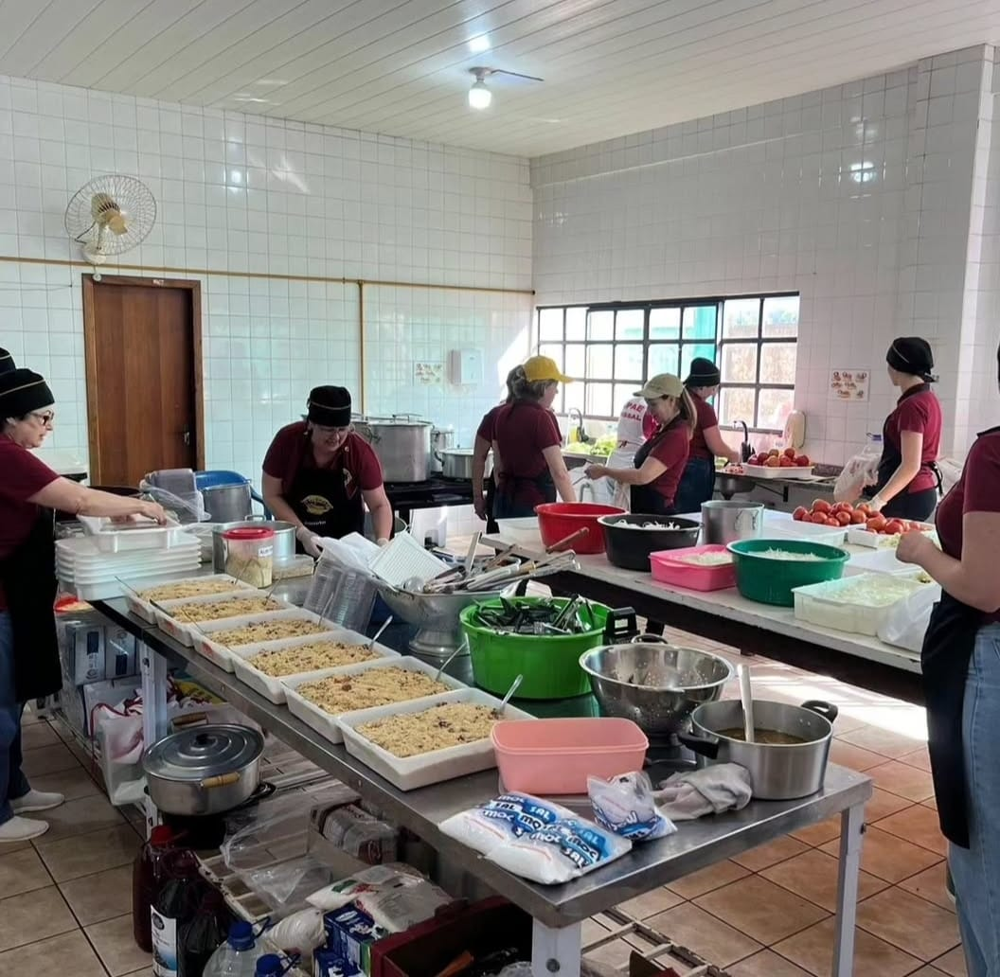

A APAE (Associação de Pais e Amigos dos Excepcionais), se dedica a promover a inclusão e a atenção integral de pessoas com deficiência, visando oferecer suporte, educação, saúde e qualidade de vida. Seu objetivo é garantir os direitos dessas pessoas, oferecendo oportunidades de desenvolvimento e inserção social, combatendo o preconceito e a discriminação.
Seus serviços incluem escolas especializadas, terapias (como fisioterapia e fonoaudiologia), oficinas de capacitação, atividades culturais e esportivas. Além disso, as APAEs atuam em campanhas de conscientização e políticas públicas para garantir igualdade e acessibilidade.
O foco principal é proporcionar autonomia, bem-estar e participação ativa das pessoas com deficiência na sociedade.
  A história da APAE começou em 11 de dezembro de 1954, no Rio de Janeiro, quando um grupo de pais, profissionais e voluntários criou a primeira unidade com o objetivo de atender crianças com deficiência intelectual. A iniciativa surgiu da falta de instituições e serviços especializados para pessoas com deficiência, um tema negligenciado na época.
Com o sucesso dessa unidade pioneira, a ideia se fortaleceu rapidamente, e outras APAEs surgiram em diversas cidades do Brasil. O movimento se consolida como uma das principais redes de atendimento a pessoas com deficiência no país. Em 1962, foi criada a Federação Nacional das APAEs, com o objetivo de coordenar, fortalecer e dar suporte às unidades locais, promovendo um trabalho em rede. Desde então, o movimento Apaeano tem crescido continuamente, reunindo mais de 2.200 unidades espalhadas pelo Brasil. Além de sua atuação local, o movimento APAE busca influência em políticas públicas e promove os direitos das pessoas com deficiência, fortalecendo a inclusão e a cidadania.
Já a APAE de Missal (PR), foi fundada em 17 de setembro de 1982, pelos próprios moradores da comunidade, e é conhecida como Escola Especial Maria Goretti.
Saiba mais sobre nósA APAE conta com a ajuda de muita gente para a continuidade de seus trabalhos. Essa ajuda varia em ações voluntárias de pessoas apoiadoras da causa, como também arrecadação de fundos com festas beneficentes e doações das mais variadas formas. Um dos motivos para a criação desse site, foi a visibilidade que o mesmo poderia ter e o quanto poderia ser benefico para a Entida Social.
Se você tem um celular com o aplicativo do seu banco ou outros apps – como PicPay, PayPal, MercadoPago, Ame Digital ou Nubank – é possível fazer uma doação inserindo a chave PIX da Apae Missal. Você precisará ter o seu próprio PIX cadastrado antes dessa transação. Ao doar para a Apae Missal, você está contribuindo para o atendimento Terapêutico Gratuito para quase 100 pessoas com deficiência intelectual e múltipla. Caminhe com nós nessa luta diária pela inclusão!
Contribua agora